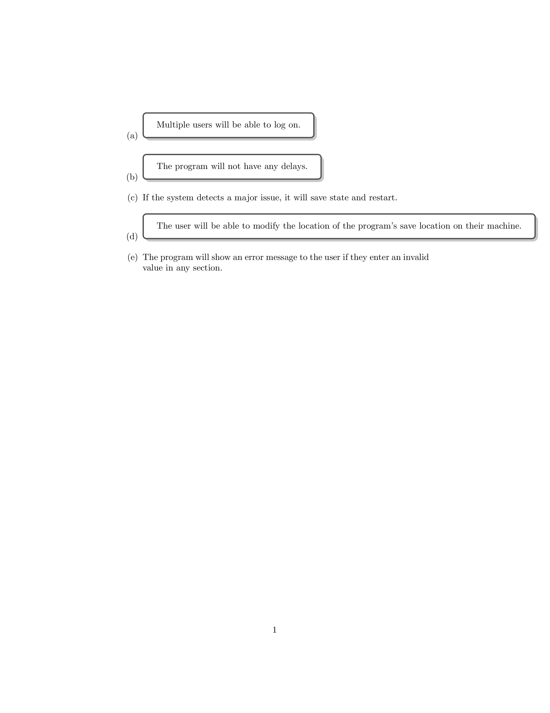

\documentclass{article}
\usepackage{enumitem}
\usepackage[most]{tcolorbox}
\usetikzlibrary{arrows}
\usetikzlibrary{shapes}
\newcommand{\mymk}[1]{%
\tikz[baseline=(char.base)]\node[anchor=south west, draw,rectangle, rounded corners, inner sep=2pt, minimum size=7mm,
text height=2mm](char){\ensuremath{#1}} ;}
\newcommand*\circled[1]{\tikz[baseline=(char.base)]{
\node[shape=circle,draw,inner sep=2pt] (char) {#1};}}
\begin{document}
\begin{enumerate}
\def\labelenumi{(\alph{enumi})}
\item \tcbox[enhanced,drop shadow,colback=white]{Multiple users will be able to log on.}
\item \tcbox[enhanced,drop shadow,colback=white]{The program will not have any delays.}
\item If the system detects a major issue, it will save state and restart.
\item \tcbox[enhanced,drop shadow,colback=white]{The user will be able to modify the location of the program’s save location on their machine.}
\item The program will show an error message to the user if they enter an invalid value in any section.
\end{enumerate}
\end{document}Created by David Li